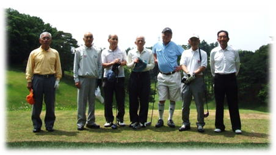
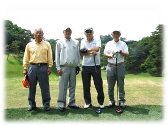
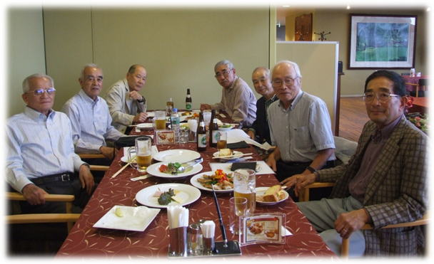

| 横浜国立大学工学部第四寮 |
| 第13回弘南寮ゴルフ大会 |
| 時：平成26年5月23日（金） 所：川崎国際生田緑地ゴルフ場（ベントグリーン） |
| 第13回弘南寮ゴルフ大会は、参加者が7名と少なかったが、川崎国際生田緑地ゴルフ場で行われた。関東では珍しい高低差のある山岳コースで、セルフでの初プレーでは戸惑いを感ずるかもしれないが、慣れれば趣のあるコースか。 幹事役の高本さん、手術後の養生のため参加されなかったがいろいろとご手配戴いた山之内さんのご尽力に対し深く感謝申し上げます。 |
| 参加者7名、組合せ 第1組：高本幹永(17)、古市一雄(35)、高橋千穐(33) 第2組：野村安広(7)、秋山正樹(18)、野村慎一(18)、安岡慶和(27) |
|  | スタート前1番ホールティグランドにて、 左より 野村慎一、野村安広、安岡慶和、 古市一雄、高本幹永、秋山正樹、高橋千穐 |

第1組 第2組
成 績
優 勝：古市一雄 49+47=96、 96-35=61 新HDC 19
準優勝：野村安広 43+40=83、 83- 7= 76 新HDC 6 ＊賞品は無いが、ベスグロ
３ 位：秋山正樹 47+47=94 、 94-18=76 新HDC 17
Ｂ Ｂ：安岡慶和 52+55=107 、107-27=80
喜寿を過ごされた古市さん、高本さん（47+47=94、94-17=77 、4位、前回優勝）のご活躍には
脱帽した。古市さんはスタート5ホール目位から、「今､幾ホール目？疲れた」と仰りながら、
クラブを思い切りよく振回し、それでいて飛距離も充分なナイスショットを連発、10番ホール
ではグリーン脇よりチップインバーディ、この他ワンパット6回。同組の高橋は、煽られっ放し
の感あり、只々驚嘆。因みに高橋は、55+62=117、117-33=84 見事ＢＭとなりました。トホホ。
気力・体力・知力に優れる大先輩の方々には、我々の鑑として、末永くご活躍されますよう
お祈り申し上げます。
今回、参加されなかった方々も含め、第14回目が盛大に開催されますよう祈っております。
プレー後のパーティで、次回、幹事は野村安広さん、秋山正樹さん（後日決定）、
次回開催予定は、平成26年10月3日（金）総武カントリークラブ印旛コースに一応決定。
ささやかながら、和やかな雰囲気で行われたパーティ

飲物は、全て古市さんの奢り、ご馳走様でした。
＊文中一部敬称略。 本ＨＰへの記載は、猪原暉雄さん監修。
（以上文責 高橋千穐）